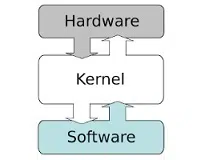

COMPUTADORAS
Las computadoras son dispositivos electrónicos diseñados para procesar, almacenar y manipular datos de manera rápida y eficiente. Estas máquinas son capaces de ejecutar una
amplia variedad de tareas y funciones, desde cálculos matemáticos simples hasta operaciones complejas de procesamiento de datos.

Componentes Importantes:
- Hardware: Este se refiere a los componentes físicos de la computadora, como la unidad central de procesamiento (CPU), la memoria RAM, el disco duro, la tarjeta madre, la pantalla, el teclado, el ratón y otros dispositivos periféricos como impresoras y escáneres.
- Software: El software comprende los programas y aplicaciones que se ejecutan en la computadora. Esto incluye el sistema operativo, que es el software básico que gestiona los recursos y proporciona una interfaz entre el usuario y el hardware, así como programas de aplicación como procesadores de texto, hojas de cálculo, navegadores web, juegos y mucho más.
